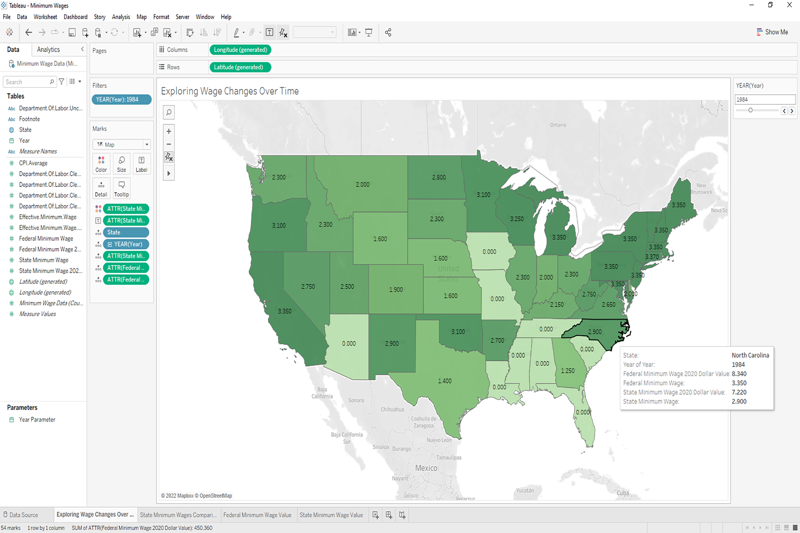

Minimum Wage Data Project
A Tableau Exercise In Creating Map/Geospatial Visualization For Analysis
For this project I found a free dataset of minimum wages from all 50 states from the years 1968-2020. With this impressive dataset I wanted to create some interesting visualiztions that could help me better analyze how the U.S. federal and state minimum wages were changing over time and what impacts that could have on the U.S economy and its citizens.
Here are some of the key questions that I wanted to answer with my analysis.
- Are certain areas of the U.S. more likely to have higher minimum wages?
- What states have the highest minimum wages today?
- What are some trends in individual states wages over time?
- What trends does the federal minimum wage show over time?
It is also worth noting that this analysis has data only demonstrating wages and their
The Inital Pre-Cleaned Dataset In Excel.
The data came pre-cleaned and ready to use in a cvv file that I easily loaded into my Tableau workspace. The most notable columns (A-F) included in my analysis were the year, state, the state minimum wage for that year, the state minimum wage's modern value (2020), the federal minimum wage for that year, and the federal minimum wage's modern value (2020).
Interactable Map of State Minimum Wages Over Time.
Since I had some Geospatial data from the state column, I thought that one of the most useful visualiztions I could make would be a map of the states filtered by any single year someone wanted to analyze wages for. Hovering over a state allows someone to view all its minimum wage data for that year with the federal data listed as well. This visualization is particularly useful if we want to do comparisons between states and/or federal minimum wages within seconds.
The map displays and color codes each states' minimum wage for that year (a wage of 0 means they used the federal minimum wage as their state minimum wage). That allowed me to instantly compare wages with all of the states. From there I could just hover over any state to view the federal wage to compare it as well. The modern 2020 value also gives us context as to the value of what the wages had during the listed year.
Chart Comparing Different State Wages in a specific year (i.e., 2020).
I made this chart because I believed it would be easier to do multiple/many state comparisons for any year that needed to be analyzed. While the map is impressive and good for overview and individual state comparisons, this chart allows us to quickly view and compare large blocks of states’ wages (like the top and bottom ten).
Here I was also able to answer one of my key questions as well, being which states have the highest minimum wages as of when this analysis was conducted. The top five states were District of Columbia ($14.00/hr), Washington ($13.50/hr), California ($13.00/hr), Massachusetts ($12.75/hr), and tied at fifth place were Arizona, Colorado, and Maine ($12.00/hr).
Displaying Data For Each Individual States' Wages Over Time
Investigating Federal Minimum Wages Change in Value Over Time.